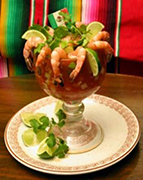

Comida
No soy exigente a la hora de comer, puedo comer casi todo platillo. Entre mis comidas favoritas estÿn:- Comida China
- Mariscos
 - Carne Asada
Juegos
Mis gustos favoritos varían entre la PC y los juegos de Xbox 360. no soy un "buen"jugador, pero le hago el esfuerzo...
A continuación, una lista de los juegos que mÿs disfruto, no puedo señalarlos exactamente
como favoritos, pero ahí van:
- Halo 3.

Uno de mis primeros juegos de consola, el primero de Xbox 360, el favoritismo que
le tengo a este es mÿs por nostalgia. - The Legend of Zelda Ocarina of Time.

Primer juego de consola que jugué, no solo lo prefiero por nostalgia si no que en
verdad lo disfruto, la historia y la jugabilidad. - Halo Reach.

Es una vercion mejorada de la saga Halo con mejores graficas pero la misma jugabilidad que me encanta. - Halo 4.

Continuacion de la historia, jugabilidad mejorada pero no muy diferente, mas de lo mismo, pero no significa malo. - StarCraft 2.

Me recuerda a AOE, que es otro de mis favoritos, ademÿs de que si historia y
cinemÿticas me encanta. - Gears of War 2, 3 y 1.

En ese orden, para este punto es evidente que me gustan los juegos de disparos
en primera persona. - Age of Empires 2.

Soy un asco en este juego, pero fue el primer juego de este tipo que jugué y
hasta la fecha me sigue haciendo gastar horas de mi vida. - Ragnrok Online.

Primer MMORPG que jugué, lo jugué demasiado tiempo, ya no lo disfruto, pero
el tiempo invertido y las personas que conocí me hacen regresar una y otra vez a él.


Libros
Mi experiencia como lector comenzó en el año 2014, cuando tenía 19 años, en verdad, hastaentonces no había leído un solo libro completo, y no había leído ningun libro que no
fuera por razones escolares. A continuación, algunos de los libros que mÿs he disfrutado sin un orden en particular.
- El Nombre del Viento.

primer libro de la saga de Crónicas del asesino de Reyes, por Patrick Rothfuss.
Fue el primer libro que leí completo y en verdad su historia me encanta.
La historia habla de Kevote, que se pronuncia cuouz, un personaje legendario en su mundo,
rodeado de aventuras y tragedias.
Comienza con un escribano que le encuentra, cuando el mundo le cree muerto, el escribano
pide a kvote que le cuente la historia de su vida, como se convirtió en la leyenda que es y
también en el monstruo que algunos creen. - El Temor de un Hombre Sabio.

Segundo libro de la saga de Crónicas del asesino de Reyes
Kvote cuenta la historia de su vida durante tres días, cada uno de los libros ocupa un dia,
este es el segundo dia y la continuación directa de los eventos del primer libro. Contesta
algunas dudas que dejo el primero y deja muchas dudas mÿs.
Por desgracia Patrick escribe muy lento y han pasado 4 años desde la publicación de este y
aun no hay un tercer libro. - Las ventajas de ser invisible.

Por Stephen Chbosky. Fue un regalo por parte de un primo.
Con sinceridad esperaba que se tratara de invisibilidad visual y las aventuras y desventuras
que conllevaban ello. Pero el título hace referencia a la invisibilidad social.
Es una excelente novela, recomiendo mucho leerla, pero principalmente recomiendo no ver
la película que es un asco. - Trilogía de La Fundación.

por Isaac Asimov.Realmente es la compilación de las tres novelas cortas de la trilogía original.
Es una increíble historia futurista que es contada por diferentes personas durante épocas diferentes
con algunos años o siglos de diferencia. cuentan la historia de La Fundación, una organización
científica que domina un planeta que ha sido creada para salvar a la galaxia de siglos de caos
después de la caída del imperio galÿctico, y ser el origen de un nuevo y mejor Imperio Galÿctico. - Erebos.

Por Ursula Poznanski. Curiosa novela, algo fantasiosa y de misterio. En un colegio empiezan a
circular rumores de un "juego" de ordenador, los afortunado en jugarlo tiene prohibido hablar
de él, a la par de que cosas misteriosas ocurren a algunos estudiantes. - El Esclavo.

por Anand Dilvar, fue el último regalo que mi abuelo Materno me dio. Una triste historia de un
hombre que se encuentra en un estado similar al vegetal, por desgracia es consciente de todo lo
que ocurre a su alrededor, pero los demÿs lo creen prÿcticamente muerto. Pasarÿ por múltiples
situaciones que lo harÿn reflexionar de su vida. - La Niebla.

de Stephen King. Una novela de terror que relata los eventos de un pequeño pueblo junto a un lago,
después de una terrible tormenta una niebla espesa cae sobre el pueblo y criaturas terroríficas
asesinan a los pobladores. - La búsqueda en sueños de Kadath la Desconocida.
de P.H. Lovecraft. Una historia fantÿstica ubicada en el universo de los sueños, donde criaturas
cósmicas y de todo tipo habitan, un hombre decide buscar la misteriosa ciudad de Kadath, la ciudad
de los Dioses. - El ciclo del hombre lobo.

Por Stephen King. Seré sincero, no me gusta leer a Stephen King, el cómo narra las historias me
desespera mÿs que Lovcraft, pero esta historia me mantuvo un tanto en suspenso. Como un hombre
lobo se ocultaba entre la gente de un pequeño poblado y con el paso de los meses acosaba y asesinaba
a sus presas humanas. - Halo the fall of the Reach.

De Eric Nylund. Como fan de Halo me era de gran interés leer este libro, el cual relata la historia
previa al juego Halo combat evolved, como se entró y creo el héroe legendario que es el jefe maestro y
como callo el planeta mÿs poderoso que poseía la humanidad. - Sangre de campeón.

Por Carlos Cuauhtémoc Sÿnchez. Fue uno de mis primeros libros de la infancia, pero jamÿs lo había completado.
Narra la vida de un niño que pasa por muchos conflictos en su vida, bajas de autoestima y peligros, comenzando
con el trÿgico accidente de su hermano del cual él fue responsable.


libros científicos, puesto que solo he leído cosas que me interesan u ocupo y los dejo.
Música
Esta parte me es de las mÿs complicadas, no tengo favoritismo a un género de música ni a un cantante o banda enparticular, ni siquiera opto por aprenderme sus nombres.
Puedo decir que escucho un poco de todo. La única música que en verdad no soporto son los corridos.
Algunos grupos musicales, cantantes, o compositores que disfrute y quizÿs aun disfruto:
- Daft Punk
- El Gran silencio
- Gorillaz
- Panda
- Green Day
- Mana
- Beethoven
- Mozart
- Koji Kondo (las composiciones de the legend of zelda)
- Miranda
siento nada especial por nada en particular y no me interesa aprenderme nombres o letras y la lista anterior es
de aquella música que escuche mucho durante algún tiempo y que me ha llegado a la mente a la hora de hacer esta lista.
Películas
Soy entusiasta del cine de acción, en particular del cine militar y mÿs exacto de la guerra medieval, ya sea verídicao fantÿstica, aun asi disfruto de casi todos los géneros.
Ahora una lista de mis recomendaciones:
- La trilogía del señor de los anillos
- Troya
- Salvando al soldado Ryan
- todas las películas de Jackie chan
- Las crónicas de Riddick
- Sueños de fuga
- Una aventura extraordinaria
- En búsqueda de la felicidad
- Hombre en llamas
- Gran Torino
- Starship Troopers
- Chaolin Soccer
- Kun fu Basket
Viajes
No soy una persona muy movida, me gusta mi hogar y no suelo salir o desear salir de él, pero la vida por una u otrarazón me ha llevado lejos, a continuación, los lugares mÿs relevantes que he visitado:
- Ciudad de México.
Viaje al menos cuatro veces a esta ciudad, siempre por la misma razón, padezco de daño en el nervio óptico,
viajamos a C.deM. para obtener respuestas y soluciones, desgraciadamente no las obtuvimos satisfactoriamente,
pero dejando de lado eso, paseé por la ciudad, vi el monumento a la revolución, estuve en el palacio de bellas
artes, la villa de Guadalupe y la Catedral, el castillo de Chapultepec, entre muchos otros lugares que
tristemente no recuerdo. - Puerto Peñasco Sonora.
Ya perdí la cuenta de cuantas veces he ido, pero la mÿs memorable para mí fue los 12 años, cómo siempre la razón
por la que íbamos era para visitar a un tío que nunca salía de esa ciudad, lo especial de esta ocasión fueron
dos salidas, la primera visitamos la playa, era si no me equivoco el año 2007, y entonces había algunos hoteles
muy grandes, pero no ocupaban toda la palaya, era enorme era hermosa, mucha gente, pero mucho espacio, olas
grandes y arena blanca. como dato curioso, un primo y yo nos alejamos de mi madre y mi tío sin avisar, para
cuando regresamos una hora mÿs tarde, había un ÿrea enorme de arena llena de las huellas de mi madre que nos habí
a buscado desesperadamente<.
La segunda ocasión fue un viaje a otra playa, lo especial en esta es que a ciertas horas el mar retrocedía tanto que
podíamos caminar hasta los arrecifes, cientos de peces atrapados en largas piscinas naturales, era hermoso, con
solo meter la mano atrape un puñado de pequeños pececillos que escaparon con una facilidad envidiable. - Tepic Nayarit.
También fue una ciudad muy visitada en mi infancia, visitar mas familia. Me encantaba ir puesto
que me llevaban al parque La Loma, enorme como no hubiese conocido en mucho tiempo, lleno de atracciones y juegos.
En una ocasión me extravié de la vista de mi Familia, todos se alarmaron y me buscaron como locos, por mi parte,
los veía desde lo alto de una res baladilla cubierta, nunca me paso por la mente que me estuvieran buscando, cada
vez que regreso de visita se vuelve una historia frecuente - Santa María del Oro Nayarit.
Sin duda uno de mis lugares favoritos, ya ni siquiera recuerdo la fecha ni mi edad la vez que visite ese enorme
lago rodeado por cerros, sin duda una de las escenas mÿs bellas que recuerdo, no había nada en especial, solo
el paisaje y con eso me basta para ser mi favorito. - Zacatecas Zacatecas.
Solo puedo decir que viaje ahí para acompañar a una amiga de la familia, no recuerdo nada mÿs, absolutamente
nada, ni los edificios ni las calles, lo único que puedo contar de ese viaje es que paramos en Guadalajara,
visitamos el mejor zoológico que alguna vez he conocido y que rezamos por nuestras vidas al abordar un taxi cuyo
taxista conducía terriblemente rÿpido. - La Frontera.
Ha sido el chiste mÿs tonto de mi vida, durante alguno de nuestros viajes a puerto peñasco decidimos ir a cruzar
la frontera y conocer la ciudad de Finix, tristemente no éramos conscientes de la cantidad estúpida de documentos
que nos solicitaban para darnos permiso de cruzar, los cuales no llevÿbamos, asi que lo mÿs lejos que llegamos fue
a un mini mercado a unos cien metros quizÿs, y si, ese fue mi gran viaje a los Estados Unidos de América.
Series
Como informÿtico no es de sorprender que pase mucho tiempo frente a una pantalla. Cuando no es la PC o Lap, esla TV. Como resultado tuve la ocasión de ver muchas series de todo tipo. En este espacio pondré mis favoritas:
- Dr. House.

Sin duda mi favorita, el Doctor en Medicina, genio, sínico y brutalmente honesto Gregory House, empleado
y jefe del departamento de diagnóstico médico del ficticio Hospital Universitario Princeton-Plainsboro. Encargado
de resolver los mayores acertijos médicos que son sus pacientes, enfermos de males que otros médicos no son
capaces de resolver. - Como Conocí a tu madre.

Esta comedia compite por ser mi favorita. la historia de un grupo de amigos en sus mejores años. El protagonista
Ted Mosby, relata a sus hijos la larga, loca, ridícula y genial historia de cómo conoció a su madre, relatando
cada escabroso capítulo de su vida, las mujeres con las que salió, las locuras que hizo por ellas, las locuras
de sus mejores amigos y las aventuras, subidas y bajadas que da la vida. - La Teoría del BigBang.

La otra comedia que pelea por el título de mi comedia favorita. Las locuras de un grupo de amigos científicos,
genios y nerds, su dia a dia, su extraña forma de relacionarse con otros seres humanos y las tonterías que llegan
a hacer por el género femenino. - Game of Thrones.

Otra de mis favoritas gracias a su excelente historia y a la temÿtica medieval que me fascina. Narra la vida de las
Familias poderosas de los siete reinos de poniente, el cómo se destrozan unas a otras por el control total, por
la venganza y el honor, a la par que un mal siniestro fuera de toda proporción se avecina para desolarlo todo. - The Walking Dead.
Ya no tan favorita, pero me sigue haciendo esperar temporadas y capítulos nuevos. La historia de los supervivientes
tras el apocalipsis zombie, donde el mayor peligro no son los zombies si no los otros supervivientes que se han
corrompido por este mundo y que hacen y harÿn de todo con tal de sobrevivir


Animación
Seguramente mÿs que las series, películas, música y demÿs, mi mayor gusto es la animación. con animación me refieroa cualquier producto visual animado a base de dibujos tanto a mano como digitales, llÿmese caricaturas, anime,
cortos online, etc.
Ahora unas cuantas de las que mÿs disfruto ver:
- RWBY.

Actualmente mi Serie Animada Favorita. Creada por el ya fallecido Monty Oum y animada por el estudio independiente
RoosterTeeth, llamo mi atención por su inusual estilo en 3D con características de anime, irónicamente lo que me
atrajo fue la baja y a la vez alta calidad que tenía la animación, cosa que fue perdiéndose a partir de la segunda
temporada, pues esta fue mejorando drÿsticamente con cada temporada.
La Historia nos situa en el planeta de Remnant, en el cual la humanidad vive acosada por terribles criaturas de
pesadilla que son atraídas por las emociones negativas de las personas, como el miedo o la ira. Para protegerse,
cada país educa a los guardianes que protegerÿn a la humanidad, llamados Cazadores, que sirven como guardianes contra
las criaturas del Grimm y como defensores de la paz. La protagonista principal Ruby Rose, hÿbil guerrera que pelea
usando una enorme guadaña color carmesí que ademÿs se convierte en rifle de francotirador, después de enfrentar a un
grupo de ladrones armados es invitada a unirse a la academia Beacon para Cazadores, donde mejorara sus habilidades
y se convertirÿ en líder de un equipo que se dedicara a enfrentar a las criaturas de Grimm y a una organización
terrorista que amenaza a su nuevo hogar. - Full Metal Alchemist y Full Metal Alchemist Brotherhood.

Dos versiones anime del manga homónimo, que relatan las desventuras de los hermanos Elric, que después de la muerte de
su madre cuando eran niños, aprenden la poderosa alquimia y usan la prohibida transmutación humana para intentar
revivirla terminando en catÿstrofe con la pérdida de un brazo y pierna de un hermano y el cuerpo entero del otro.
Para recuperar sus cuerpos los hermanos Elric se aventuran en la búsqueda de la mítica Piedra filosofal que creen les
darÿ el poder que necesitan para reparar su error. - Steven Universe.

Caricatura emitida por cartoonNetwork, pese a su simpleza me ha atraído y en verdad me hace esperar la continuación
de la historia que constantemente entra en receso.
Cuneta la historia de Steven Universe y las Gemas de Crystal, Steven siendo un hibrido humano-gema y las gemas
alienígenas ancestrales que habitan la tierra y que en un pasado lucharon contra su planeta hogar para defender la
vida de la tierra. Ahora combaten con los remanentes de la antigua guerra y con las viejas amenazas que regresan
para terminar lo que comenzaron siglos atrÿs. - DC y Marvel.

Hay demasiado de ambas compañías, pero nada que resalte lo suficiente para hablar exclusivamente de él. desde Marvel
con sus caricaturas y DC con sus películas animadas. - Digimon Adventure, Digimon Adventure 02 y Digimon Tamers.

Animes obligatorios de mi infancia, trajeron la fantasía a mi vida y me hicieron soñar y fantasear con otros mundos.
Las historias de los niños elegidos y sus digimons, seres provenientes del digimundo, otra dimensión fantÿstica que
comparte características con el mundo digital, el cual siempre estÿ bajo la amenaza de algún mal, para ello invocan
a estos niños elegidos que se unirÿn a los digimons para traer la paz nuevamente.


Volver a Inicio